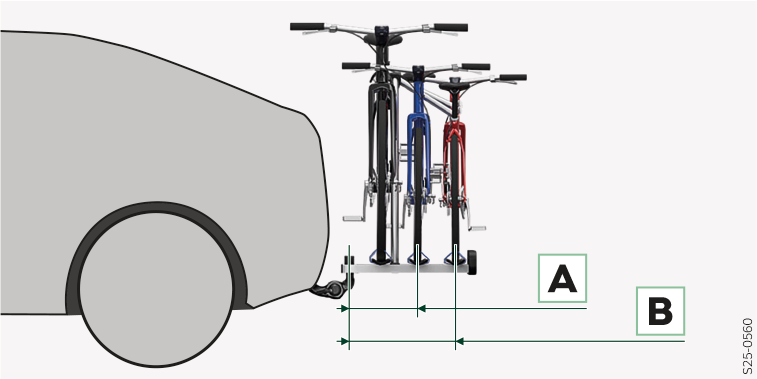

Points d'attache du dispositif d'attelage
- A
Points de fixation sur la carrosserie
- B
Distance des points d'attache
- C
Longueur du porte-à-faux arrière au centre de la tête sphérique
- D
Distance du point de fixation latéral avant au centre de la tête sphérique
- E
Distance du point de fixation latéral central au centre de la tête sphérique
- F
Distance du point de fixation arrière au centre de la tête sphérique
- G
Distance du point de fixation latéral arrière au centre de la tête sphérique
- H
Distance du pare-chocs arrière au centre de la rotule (selon la norme ECE-R 55)
- I
Distance du centre de la rotule à la route (selon la norme ECE-R 55)
Les points de fixation latéraux sont montés depuis le côté du véhicule, les points de fixation arrière depuis l’arrière du véhicule.
Données en mm | |
|---|---|
B | 994 |
C | 932 |
D | 588 |
E | 368 |
F | 341 |
G | 303 |
H | min 65 |
I | 350–420 |
Charge verticale maximale pour la traction d’une remorque
La charge sur timon maximale est de 75 kg.
Vous trouverez les données applicables à votre véhicule dans la documentation technique du véhicule (par ex. dans la documentation d'homologation du véhicule, dans le document COC) ou pouvez demander à un partenaire Škoda.
Les autres indications sur la plaque signalétique du dispositif d'attelage par ex. indiquent uniquement les valeurs de test du dispositif.
Charge verticale avec accessoires montés
Lors de l’utilisation de l'accessoire (par ex. porte-vélos), veillez à ce que sa longueur maximale ainsi que son poids total admissible avec la charge soient respectés.
La longueur maximale des accessoires mesurée à partir de la boule d'attelage du dispositif d'attelage ne doit pas dépasser 70 cm.
Le poids total autorisé des accessoires installés, y compris leur charge, est de 75 kg maximum et varie en fonction de la distance entre le centre de gravité de la charge et la rotule de l'attelage de remorque.
Distance du centre de gravité de la charge à la rotule du dispositif d'attelage | Poids total autorisé des accessoires, charge comprise |
|---|---|
30 cm | 75 kg |
60 cm | 35 kg |
70 cm | 0 kg |
Utilisation du porte-vélos
Škoda Auto recommande le respect du tableau suivant concernant la charge et le nombre de vélos sur le porte-vélos.
Charge maximale sur le timon de la remorque spécifique au véhicule | Poids total autorisé des accessoires, charge comprise | Nombre de vélos |
|---|---|---|
50 kg | 50 kg | 2 |
55 kg | 55 kg | 2 |
environ 75 kg | 75 kg | 3 |

- A
La longueur maximale est de 500 mm avec deux vélos chargés et le poids total autorisé des accessoires, charge utile comprise, est de 55 kg.
- B
La longueur maximale est de 700 mm avec trois vélos chargés et le poids total autorisé des accessoires, charge utile comprise, est de 75 kg.
Nous recommandons d’utiliser des porte-vélos de la gamme d’accessoires d’origine Škoda.
Pour réduire la traînée et la contrainte, nous vous recommandons de retirer les paniers, sacs, sièges enfants et batteries des vélos.

MISE EN GARDE
Risque d’accident !
Ne pas dépasser la charge verticale maximale.
Ne pas dépasser la charge de remorque admissible et le poids d’un autre accessoire, par ex. du porte-vélos.

AVERTISSEMENT
Risque de détérioration du dispositif d'attelage et du véhicule !
Lors de l’utilisation de l'accessoire, par exemple un porte-vélo, respecter la longueur maximale et le poids total autorisé des accessoires, y compris la charge.
Charges de remorque autorisées
Les données de la documentation technique du véhicule ont la priorité sur les données de cette notice d’utilisation.
MISE EN GARDE
Risque d’accident !
Ne pas dépasser la charge admissible de la remorque.
Type de moteur électrique | Charge tractée autorisée (kg) | |
|---|---|---|
Freiné1) | Non freiné | |
Moteur électrique de 125 kW | 1000 | 750 |
Moteur électrique de 150 kW | 1000 | 750 |
Moteur électrique de 210 kW | 10002) | 750 |
18003) | 750 | |
Moteur électrique de 250 kW | 1800 | 750 |
1) Pour des côtes jusqu'à 12 %.
2) Véhicules à propulsion arrière.
3) Véhicules à transmission intégrale.